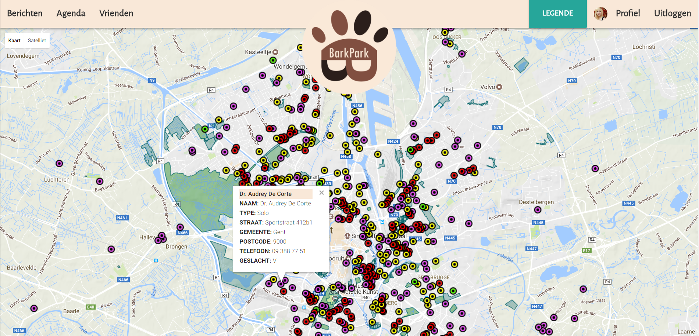

Barkpark
Jitske Segers en Xenia Tranchet
Wat is Barkpark?
- Data-driven Progressive Responsive Web Application
- Ontdek nieuwe plekken in Gent om met jouw hond te ravotten
- Maak een profiel aan over jou en je honden, voeg foto's toe
- Maak vrienden met andere hondenliefhebbers
- Spreek af met vrienden en hun honden
Doelpubliek
- Voor wie verder wil gaan dan enkel zijn welgekende buurtwandeling
- Schuchtere personen die de eerste kennismaking via technologie verkiezen
- Avontuurlijke wandelaars die met hun viervoeters nieuwe plekjes willen ontdekken
Gebruikte datasets
- Parken
- Hondenvoorzieningen
- Huisartsen (als dierenartsen)
Aanpassingen datasets
- Door middel van Google Fusion Tables
- KML files opgesplitst en aangepast naar wat we wouden tonen + andere kleuren per onderdeel
- Gehost op github
Startpagina
- Zoeken zonder inloggen
- Inloggen: meer functies (profiel, vrienden, agenda)

Kaart
- Data integratie: weergegeven via pop-up ballon
- Navigatiebar met: berichten, vrienden, agenda, legende, profiel en uitloggen 


Detailpagina
- Uitklapbaar: voorzieningen, comments, probleem
- Pop-up: invite


Profiel
- Weergave informatie, honden en foto's
- Mogelijkheden: aanpassen profiel, bericht sturen, afspraak maken


Vrienden
- Weergave vrienden
- Mogelijkheid: verzoeken accepteren/weigeren, zelf verzoek zenden


Berichten
- Weergave berichten
- Mogelijkheid: zelf bericht opstellen


Agenda
- Weergave huidige maand + afspraken
- Mogelijkheid: aanmaken afspraak